Block Sellers
Ever have a bad experience buying from someone on Discogs? Add their name to the block list and anytime an item of theirs appears in the Marketplace it will be labeled "Blocked seller" so you can decide if it's worth buying from them again.
Names can be easily added or removed. Simply click "Edit list" on the popup menu and follow the instructions.
The default setting will mark blocked sellers in red while still allowing you to place an order with them.
If you select the "Hide sellers everywhere" option from the "Edit list" page, all blocked sellers will be completely hidden from your search results.
If you select "Hide sellers in the Marketplace", sellers will be hidden in your Marketplace wantlist, but visible and marked in red on an individual release page.
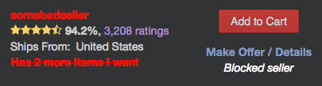Contextual Menu Options
Lets you search Discogs or other online record shops with any text selected on any webpage. Simply highlight some text, right click, and choose the shop you want to search. You can configure which shops you want to use by clicking on the "Contextual Menu" option inside Discogs Enhancer's popup.
Current selection includes: All Day Records, Bandcamp, Boomkat, Clone, Decks.de, DeeJay, Discogs, Gramaphone, Halcyon, Hardwax, InSound, Juno, Kristina Records, Oye, Pacific Beach Vinyl, Phonica, Sounds Of The Universe and YouTube.
Currency Converter
Have you ever looked at a seller's shipping rates and wondered how much they would be in your currency?
Now you can quickly find out with the Currency Converter!
Step 1: Click the '¥ € $' button in the lower-right corner of the screen.
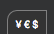Step 2: Choose the seller's currency with the select box labeled 'Convert'.
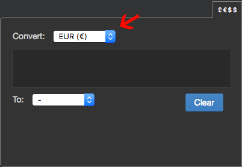Step 3: Then select your currency by choosing an option from the select box labeled 'To'.
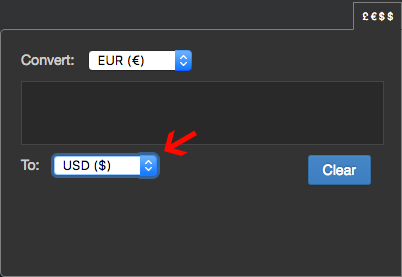Step 4: Now just type the value into the box and see your results instantly!

(Price conversions are an estimate and may not match exactly with Discogs' own conversions.)
Dark Theme
This makes Discogs much easier on the eyes at night... or all the time. Honestly, after working on this extension, I can't stand looking at Discogs without the dark theme applied.
Everlasting Marketplace
The Everlasting Marketplace lets you continuously scroll through the Marketplace listings so you'll never have to click "prev" or "next" again!
More results are automatically loaded once you reach the bottom of the Marketplace listings.
If you want to change your filter criteria, click the "Add or remove filters" link and you'll be taken to the filters at the top of the page where you can make your adjustments.
Page numbers are inserted between each set of results as you continue to scroll. You can use the "Scroll to" select box to quickly navigate between any previously loaded set of results.

Pro tip: You can stop Everlasting Marketplace from loading more results by clicking the Pause button next to the "Scroll to:" select box at the top.
Feedback Notifications
The Feedback Notifier monitors your feedback stats for changes and alerts you when a new one shows up.
Notification badges will appear at the top of the page. "S" for Seller notifications and "B" for Buyer notifications:

You can dismiss the notification by hovering over the badge and clicking the "X" that appears:

Or you can click on the submenu and go directly to your Positive, Neutral, or Negative feedback pages:
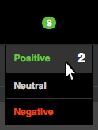Filter By Condition
This will hide all items in the Marketplace that are below a specified condition.
For instance, if you select "Near Mint", only Mint and Near Mint condition items will be shown. If you select "Very Good", only Mint, Near Mint, Very Good Plus, and Very Good items will be shown (etc...).
When results have been filtered, you will see a note that says "Filtering items below [condition]." next to the pagination links.
To enable this feature, click on the "Filter By Condition" feature in the popup and select an option from the dropdown that appears.
To disable this feature, simply select "Disabled" from the select box.
It's worth noting that this simply hides these items from view. So if there are 25 items per page and 5 of those are hidden, you will only see 20 results on that particular page. Sleeve condition is ignored when filtering items.
Filter By Country
This will hide all items in the Marketplace that are not from the country specified when using a specific Currency Filter.
For example, I often search the Marketplace for items in my Wantlist that are listed in US Dollars. Since I live in the US I don't want to buy items in other currencies in order to save on shipping. Some users will list their items in US Dollars even if they are based in another country. By setting the options to "USD" and "United States" in the popup, only items in the United States will be shown as long as I have a Currency Filter set to USD in the Marketplace.
How to use the Filter By Country feature:
First, select the currency you want to use. It must match the Currency Filter in the Marketplace as this is how Discogs Enhancer knows when to activate this feature.
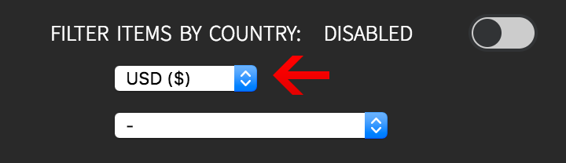Next, select the country that matches the country of the results you want to see.

Finally, turn the option on.
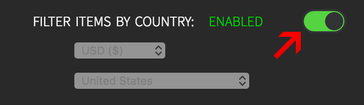As long as the option is enabled, results will be filtered whenever you set a Currency Filter in the Marketplace that matches the currency set in this option.
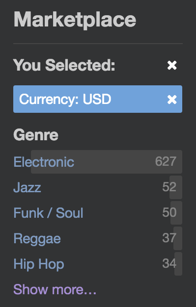Fix Blurry Gallery Images
If you've ever noticed that some scanned release images have blurry text, this option should fix it.
This will only work on monitors that are not hi-res so if you use a 4k display or have a Retina screen, you won't see any improvement.
Please be aware that by enabling this option, you may notice the images "jump" a bit when clicking the zoomed in view. This is a side effect of the way that the extension repositions the images so that they are no longer blurry.
If you would like a more detailed explaination of how this feature works, please see this post.
Hide Min, Median, Max Columns
This hides the Min, Median, Max columns in the collection page. Helpful if you'd like more space when viewing your collection.
Improved Collection UI
This makes the Collection page a little more organized and easier to understand.
Large BAOI Fields
Makes the Barcodes and Other Identifiers fields larger when you are editing a release. Helpful if you're working with longer texts on a release. (Click on the images below to enlarge them.)
Before:
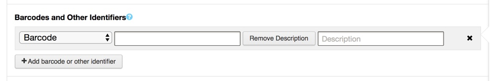
After:
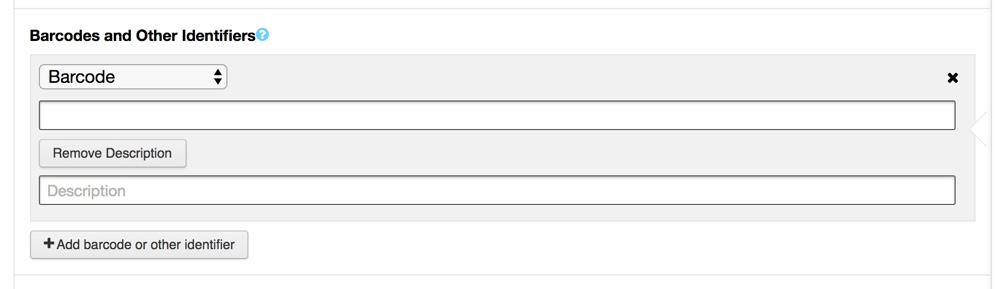
{kind=link}
{kind=link}
Large YouTube Playlists
Doubles the maximum size of the YouTube playlists on a release or list page. Helpful if there are a lot of videos and you want to be able to see more of them in the playlist at once. Please note: if there are only a few videos on a page, the size of the playlist won't change. You'll only see a larger playlist if there are more than three videos with a maximum of 6 visible at any given time.
Marketplace Highlights
This can make it easier to see what condition items are in by colorizing the Media and Sleeve conditions in the Marketplace with the following colors:
- Mint
- Near Mint
- Very Good Plus
- Very Good
- Good Plus
- Good
- Fair
- Poor
Marketplace Ratings
This will allow you to see the number of votes the release has received within the Marketplace results. If you've ever found yourself browsing another seller's inventory for other items you might want that aren't on your Wantlist, you can use this feature to see a release's rating stat without having to open another page.
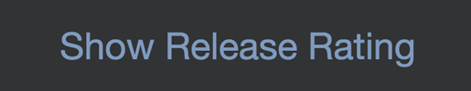To see ratings, simply click the link that says "Show Ratings". It will be located above the "View Release Page" link on each release listing.
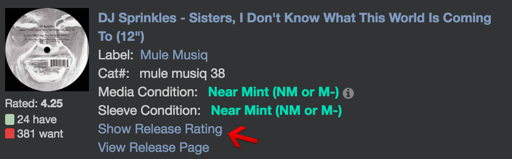Notes Counter
This will count the characters for any "notes" field in your collection/wantlist so you will know when you are getting close to the maximum character limit (255). It can be useful if you like to keep a lot of notes about your collection and you find you frequently run out of space mid-sentence.
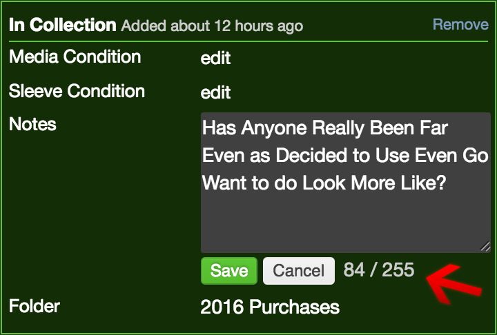Random Item Button
This will add a ♺ button to the nav bar that will show you a random item from your collection when clicked.
The functionality is identical to the "Random Item" feature in the Collection page but allows you to access it from the nav bar rather than going back to the Collection page and clicking "Random Item" again.
You have to be logged in for this feature to work.
Release Durations
Shows the total playing time of a release (if track times are provided) at the bottom of the track list.
Sort Buttons
This adds Sort A-Z buttons on all kinds of things. You can sort the dialog boxes on the Explore page, your personal lists in the 'Add to list' dialog boxes, and any filter within the Marketplace.
The first click sorts A-Z, the second click sorts Z-A and the third click returns the list to its original state (aka undo).
Suggested Prices
This will show the prices that Discogs suggests and compare them to the seller's price. It's useful for seeing if an item is priced fairly. In order for this to work you must be registered as a seller.
How to use the Suggested Prices feature:
First choose your currency from the select box. It must be the same currency you use on Discogs:

Next, turn the option on:
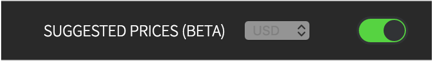For release pages, the comparisons are displayed automatically.
For pages like Wantlists, Seller pages or Master Releases, a link is inserted into the page:

Clicking this link will show the comparison for that particular listing:

Results are displayed in the currency that is set in your seller settings. Because currencies shift due to global market fluctuations and release prices shift due to market demand, the recommended price may differ from the listed price. Exchange rate data is calculated every two hours (execpt on weekends when Markets are closed). Discogs uses a different exchange service so their exchange rates might differ slightly from Discogs Enhancers' rates. Use and interpret at your own risk. Please don't use it as an excuse to be a jerk to sellers.
If you are located outside the US and have any issues, please let me know!
Tag Seller Reputation
This will mark any Seller who's reputation is below the percentage specified in the option's submenu. Simply click Tag Seller Reputation, enter a percentage in the box and turn the feature on.
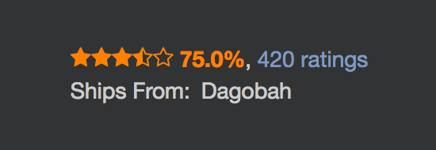You can also choose one of seven different tag colors.
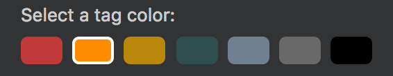Pro Tip: you can use tenths of a percent like: 95.5
Text Format Shortcuts
This adds several buttons to reviews, comments and forum/group reply boxes that allow you to quickly insert text formatting shortcuts. See a quick demo here.
Links
Quickly add links when writing reviews, notes or forum posts. Simply click on the arrow icon and paste your link into the prompt. It will automatically detect whether the link is a master release, an individual release, a forum post, an artist, a user profile or external website. The link will be formatted and inserted into the textbox at your cursor's current position.
Links must contain either "http://" or "https://" (e.g.: http://www.google.com) in order to be valid.
Pro tip: You can also quickly link to a specific submission guideline by simply typing the guideline number into the prompt (e.g.: 12.2.5).
Bold
This will insert the bold code at the current cursor's position.
Italic
This will insert the italic code at the current cursor's position.
Strikethrough
This will insert the strikethrough code at the current cursor's position.
Underline
This will insert the underline code at the current cursor's position.
Another Pro tip: You can also highlight some text, click a shortcut, and your text will be wrapped with the appropriate format tags!
Tracklist Readability
This will insert visual dividers between each side, disc, and/or format of a release in order to make it easier to read. Here's a short gif to see it in action.
You can show and hide readability dividers by clicking "Show/Hide Dividers" at the top of the track list. Your show/hide preference will be saved each time you change it.
Please see the Settings page to customize it and for detailed information on how it works.
Note: There is no single standard when it comes to listing releases with multiple formats and CDs. Because of this, there is no guarantee that the dividers will be correctly inserted for every release. It also depends on data being correctly represented.
Don't forget to turn the option on!

About
Thanks for checking out my extension! If you have any suggestions, issues, or complaints you can email me at: discogs.enhancer@gmail.com or find me here on Twitter, here on Instagram or here on Discogs.
Source Code
You can find the source code here on github — it is nearly always in a state of development and ahead of what has been released through the Chrome Store. Also, it may not work and will likely be unpleasant to read if you are a Javascript enthusiast.
Thank You
A special thank you to everyone who has donated (★) or sent in a feature request or bug!
- Christian B.
- Earline K.
- Hristo. H. ★
- Jacob V. ★
- Lucas F.
- Matt T. ★
- Matti K. ★
- Stepan K. ★
Disclaimer
Discogs Enhancer is not affiliated with Discogs.com. This program is distributed in the hope that it will be useful, but WITHOUT ANY WARRANTY; THE SOFTWARE IS PROVIDED "AS IS", without warranty of any kind, express or implied, including but not limited to the warranties of merchantability, fitness for a particular purpose, title and non-infringement. in no event shall the copyright holders or anyone distributing the software be liable for any damages or other liability, whether in contract, tort or otherwise, arising from, out of or in connection with the software or the use or other dealings in the software.